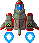
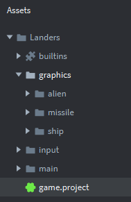
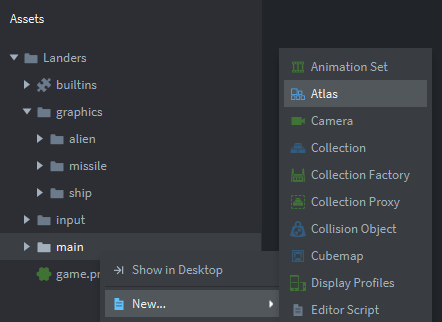
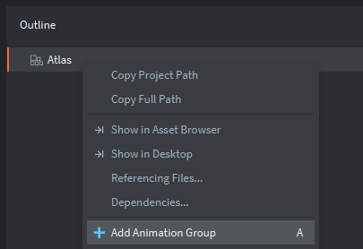
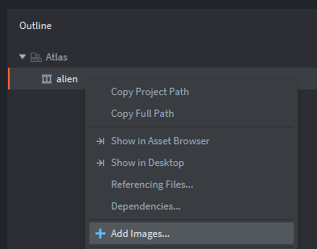
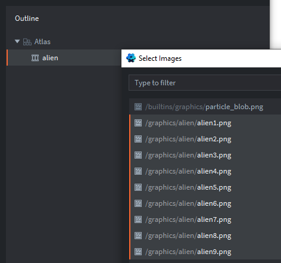
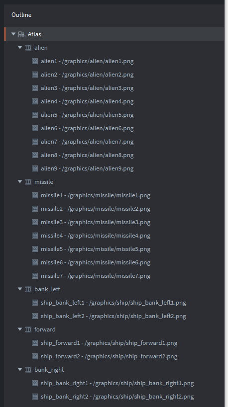
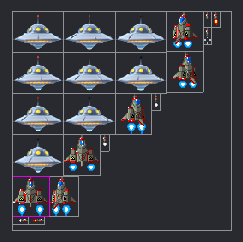

Tutorials for 2D games projects
Landers | Getting started.
- Create a new empty project titled, 'Landers'.
- You can delete the README.md file. Right click the file and choose 'Delete'.
- Download the graphics you need for the game by right clicking this zip file and saving the linked file: graphics.zip
The file contains these assets:
alienxx.png
8 animation framesmissilexx.png
7 animation framesship_xx.png
6 animation frames
- Unzip the graphics.zip file and move the graphics folder into the folder where you have saved your project. If you copied the files out of the zip file you will need to make sure you have a top level, 'graphics' folder.
- Go back to Defold and you should see the new folder and files in the assets panel.

If your assets panel does not look like this you have copied the graphics folder into the wrong place! Note, we are now structuring our files into folders to make the development more maintainable. We could also do this for other game components too.
In this tutorial try to be more independent and see if you can remember how to achieve the steps required without needing step-by-step instructions. If you get stuck you can click, 'Step-by-step guide' to see more guidance.
- Inside the 'main' folder, create a new atlas named 'graphics'.
Step-by-step guide
- In the assets panel, right click, 'main'.
- Select 'New', 'Atlas'.

- Change the 'Name' to 'graphics' and click 'Create Atlas'.
- Using the outline panel, create an animation group inside the atlas for the alien. Give it the property Id, 'alien' and use all the images in the graphics/alien folder. Set the Fps to 8. Step-by-step guide
- In the outline panel, right click, 'Atlas'.
- Select 'Add Animation Group'.

- In the properties panel, change the 'Id' to 'alien' and the Fps to 8.
- In the outline panel, right click 'alien' and select, 'Add Images...'

- Select all the alien images by clicking the first alien1.png file in the list (not particle_blob), hold down shift on the keyboard and select the last file in the list, alien9.png. Click OK.

- Remember you can press F on the keyboard to zoom out the editor window and use the mouse wheel.
- To see the animation, in the outline panel click 'alien' and press the space bar.
- Using the outline panel, create an animation group inside the atlas for the player missile. Give it the property Id, 'missile' and use all the images in the graphics/missile folder. Set the Fps to 20.
- Using the outline panel, create three different animation groups for each of the player controlled ship states. Each animation group has two images with an Fps of 8. Set the 'Id' property of each animation to be:
- bank_left
- forward
- bank_right
- When you have finished, your atlas should look like this:

Be careful to observe that each of the images is in the correct animation group!
If you preview the bank_left, bank_right animations they may appear slightly off by a few pixels in the preview. Don't worry about that, it's just how the preview is rendering. They will look fine in the game. - Save the changes by pressing CTRL-S or 'File', 'Save All'.

We can now write the script to control the player ship. Stage 2a >
 Craig'n'Dave | Version 1.3
Craig'n'Dave | Version 1.3